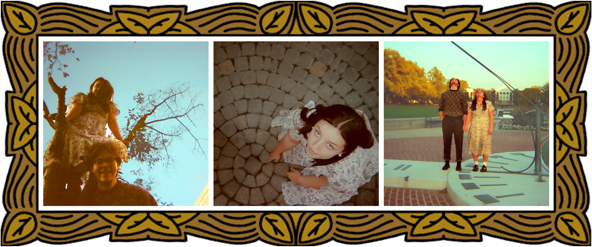

Overview
Anniversary is a three-part film photography series documenting me and my partner in locations that carry sentimental weight within our relationship. Coordinated retro-inspired outfits pair naturally with the grainy texture of film, reinforcing themes of nostalgia, origin, and quiet intimacy. Each photograph was further refined in Photoshop to introduce a warm yellow tone that links the images together, allowing them to flow as a single reflective narrative.

Click image to view gallery